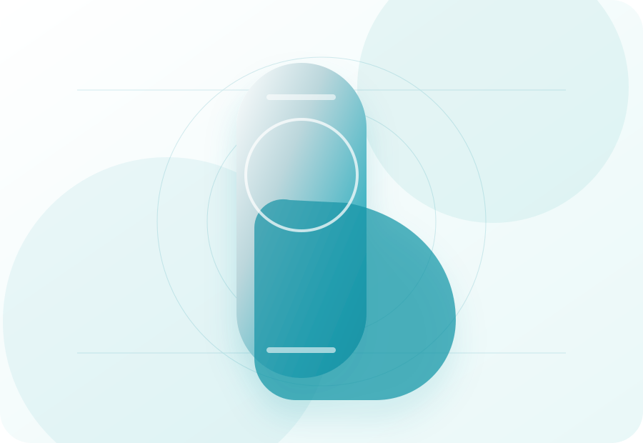
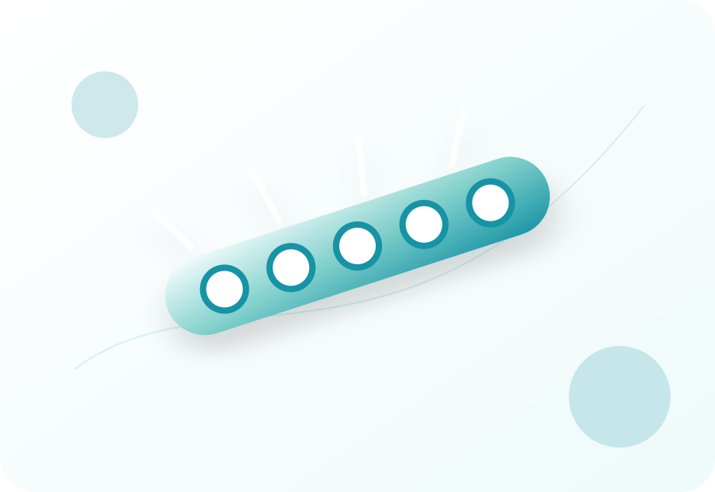
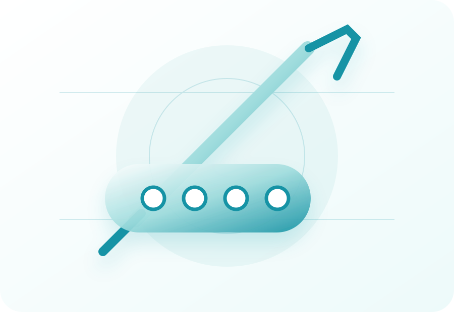

Misión
Impulsar procedimientos quirúrgicos de alta precisión mediante soluciones médicas confiables, especializadas y clínicamente respaldadas.
En BET proveemos prótesis internas y soluciones quirúrgicas confiables, diseñadas para respaldar decisiones médicas críticas con disponibilidad, precisión y acompañamiento especializado.
Impulsar procedimientos quirúrgicos de alta precisión mediante soluciones médicas confiables, especializadas y clínicamente respaldadas.
Transformar la forma en que hospitales y especialistas acceden a soluciones quirúrgicas, elevando los estándares de precisión, disponibilidad y confianza en cada intervención.
En BET no solo suministramos prótesis internas. Proveemos soluciones precisas que respaldan decisiones quirúrgicas críticas, con disponibilidad, calidad y acompañamiento especializado.
Cada solución responde a requerimientos médicos específicos, no a inventario genérico.
Disponibilidad y calidad en momentos donde el margen de error no existe.
Enfoque profundo en prótesis internas y soluciones quirúrgicas.
Acompañamiento a médicos y hospitales en la toma de decisiones.
Respuesta rápida, procesos claros y entrega oportuna.

Implantes seleccionados según zona anatómica, técnica quirúrgica y objetivo funcional.

Sistemas de fijación, placas y soluciones para estabilización estructural.

Disponibilidad, coordinación y acompañamiento para equipos médicos y administrativos.
Selecciona una zona para consultar soluciones relacionadas, aplicaciones quirúrgicas y datos clínicos editables desde JSON.
Identificamos zona anatómica, objetivo quirúrgico y requerimientos del especialista.
Validamos alternativas de implante, compatibilidad y disponibilidad.
Preparamos respuesta, entrega y acompañamiento para hospital o equipo médico.
Mantenemos trazabilidad y soporte posterior para futuras decisiones clínicas.
Comparte los datos del caso, área anatómica y tiempo estimado de intervención. BET puede coordinar información técnica, disponibilidad y seguimiento.